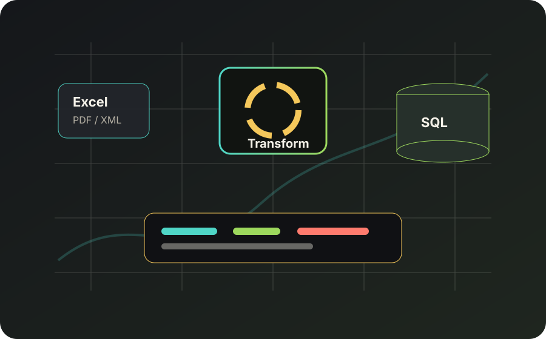

Product information was spread across heterogeneous files and formats, creating repetitive work, fragile handovers and slow access to usable data.
Python / SQL / Jenkins
Product Data Pipeline
A custom data pipeline built to turn scattered Excel, PDF and XML product files into structured data that teams could actually use and maintain.
Back to projects
I built a Python and SQL pipeline to extract, transform and consolidate inputs with libraries such as SQLAlchemy, openpyxl, pdfplumber and XML tools.
The workflow became easier to repeat, audit and automate, with Jenkins helping move the process from manual handling toward reliable execution.